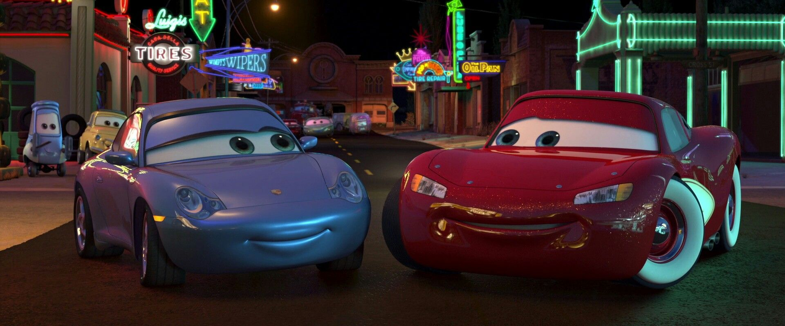
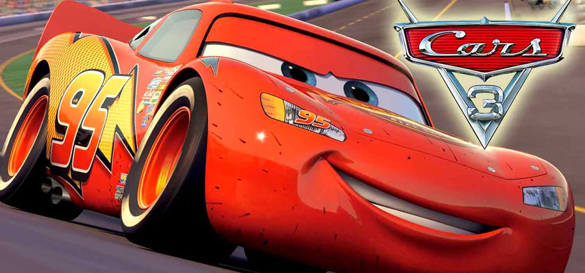

Rayo McQueen, determinado a demostrar que aún tenía lo que se necesita para ser el mejor, participó en la carrera más desafiante de su vida.
Contra todo pronóstico, Rayo ganó la carrera, solidificando su legado como una leyenda del automovilismo. Sin embargo, decidió retirarse en el pico de su carrera para dedicar más tiempo a Radiador Springs y a sus amigos.
Con su retiro, Rayo comenzó una nueva aventura, ayudando a entrenar a la próxima generación de corredores, incluyendo a Cruz Ramírez, su protegida.
